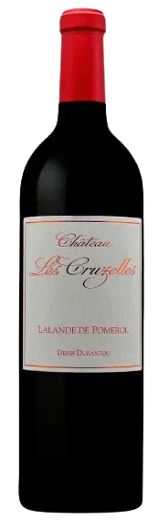
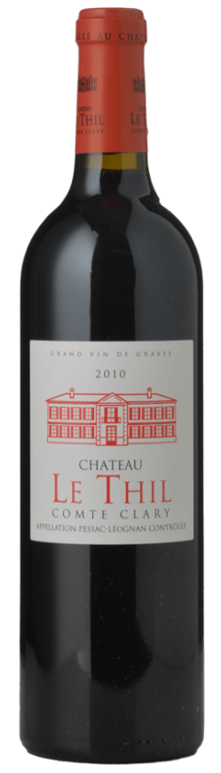
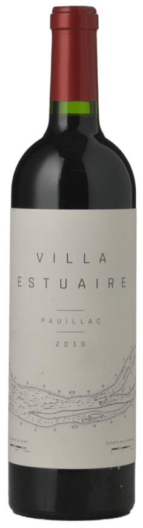
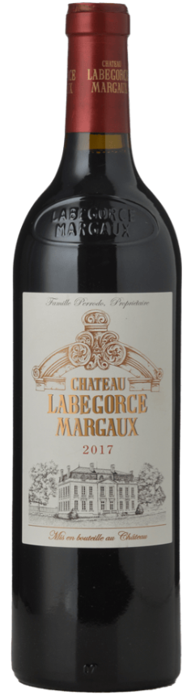
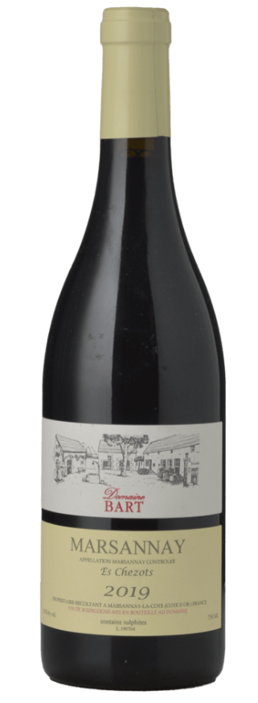
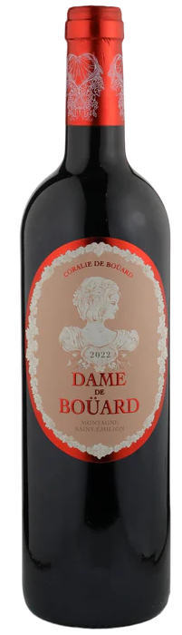
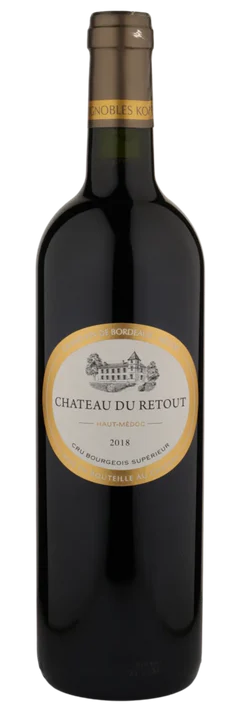
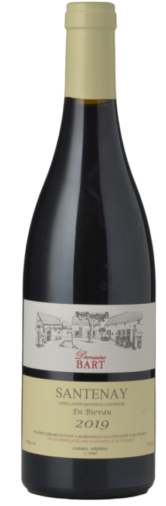
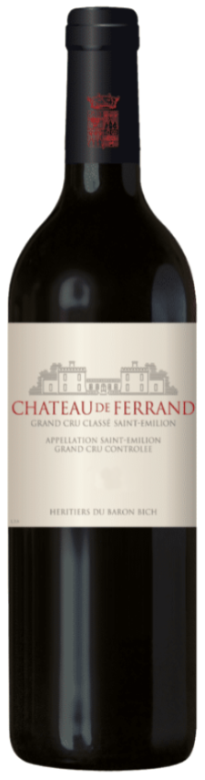

Top
Pick

Château Les Cruzelles 2021 – $76
Lalande-de-Pomerol, Bordeaux
Grapes: Merlot, Cabernet Franc
Elegant and fresh right-bank Bordeaux with red fruit, fine tannins
and a lifted, energetic profile. A beautifully balanced vintage from
one of the best value estates near Pomerol.
I have two cases of this in my cellar in Burgundy. It’s extremely difficult
to find in Australia — I've placed an international order, but delivery will
take a few months and only six bottles are coming.
If you want one, better to secure it now. I can order more if there is enough interest.
4 bottles available

Château Le Thil 2010 – $56
Pessac-Léognan, Bordeaux
Grapes: Merlot, Cabernet Sauvignon
Beautifully aged left-bank Bordeaux showing cedar, tobacco, subtle dark fruit
and that classic Pessac-Léognan elegance. Stylish, balanced and ready to drink now.
2 bottles available

Louis Vialard “Villa Estuaire” Pauillac 2019 – $58
Pauillac, Bordeaux
Grapes: Cabernet Sauvignon, Merlot
A classic young Pauillac profile with cassis, graphite, cedar and firm tannins.
Structured, vibrant and excellent value for left-bank Bordeaux in this vintage.
1 bottle available

Château Labégorce 2017 – $70
Margaux, Bordeaux
Grapes: Cabernet Sauvignon, Merlot, Cabernet Franc, Petit Verdot
Elegant and aromatic Margaux with redcurrant, cedar, floral lift and refined tannins.
A classic, medium-bodied left-bank Bordeaux drinking beautifully now.
1 bottle available

Domaine Bart “Es Chezots” Marsannay 2019 – $74
Marsannay, Burgundy
Grapes: Pinot Noir
Classic northern Côte de Nuits character: lifted red fruit, spice, floral notes
and fine, silky tannins. A beautifully balanced Marsannay from a top producer.
4 bottles available

Dame de Bouärd 2022 – $44
Montagne Saint-Émilion, Bordeaux
Grapes: Merlot, Cabernet Franc, Cabernet Sauvignon
A vibrant right-bank style with ripe red fruit, gentle spice and soft,
polished tannins. Fresh, approachable and great value from the Bouärd family
(The daughter of a famous winemaker makes this).
6 bottles available

Château Retout 2018 – $46
Haut-Médoc Cru Bourgeois, Bordeaux
Grapes: Cabernet Sauvignon, Merlot, Petit Verdot
Classic left-bank character with cassis, cedar, dark fruit and solid structure.
A dependable, well-made Médoc that consistently over-delivers for the price.
What does “Cru Bourgeois” mean?
A historic classification awarded to châteaux that meet strict quality
and tasting standards, only in Médoc (left bank Bordeaux). It often offers excellent
value and quality well above its price point.
6 bottles available

Domaine Bart “En Bievau” Santenay 2019 – $69
Santenay, Burgundy
Grapes: Pinot Noir
Bright red fruit, soft spice and a supple texture typical of Santenay.
Charming, approachable and beautifully balanced in this vintage.
3 bottles available

Château de Ferrand Grand Cru Classé 2021 – $55
Saint-Émilion, Bordeaux
Grapes: Merlot, Cabernet Franc, Cabernet Sauvignon
Fresh and vibrant Saint-Émilion with bright red fruit, fine tannins and elegant structure.
A refined and balanced young vintage from this historic Grand Cru Classé estate.
3 bottles available
Bordeaux Primeurs (En Primeur)
Order now, receive in 12–24 months
En Primeur is the traditional Bordeaux system where you buy wine while it is
still ageing in barrel. The bottles are delivered a year or two later, often
at the lowest price they will ever be offered.
Buying En Primeur is usually cheaper than purchasing after release, and it’s
even better value when ordering in bulk. I can source Primeurs each year
through trusted brokers, and there are domains I personally buy En Primeur
every vintage.
If several families are interested, we can put together a combined group
order, or meet one afternoon to choose what we want. Text me if you are interested.